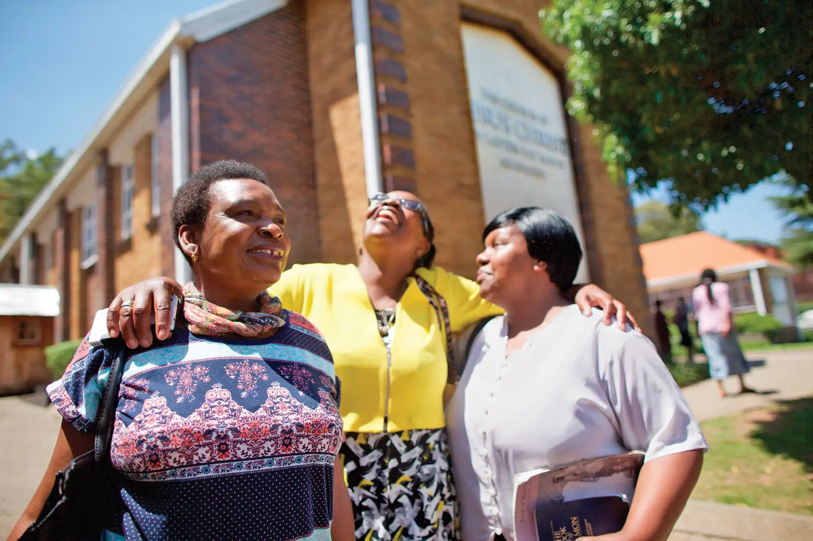
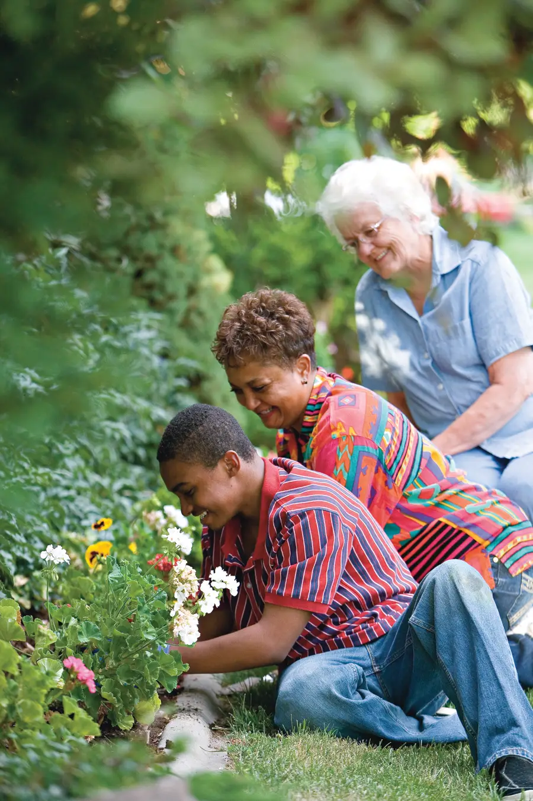

Activitats setmanals per enfortir amistats, aprendre i divertir-nos junts.
Cada setmana organitzem activitats obertes a tothom — membres de l'Església, amics, veïns i qualsevol que vulgui passar-s'ho bé. Les anomenem «Vetllades Familiars» perquè recreen l'esperit de família en un ambient càlid i acollidor.
Són nits de jocs, música, conversa, menjar i aprenentatge. No cal que siguis membre de l'Església per participar-hi — només vine amb ganes de passar-t'ho bé.
Tothom és benvingut. Joves, adults, famílies, persones soles — no importa la teva edat, idioma o creences. Les nostres activitats són gratuïtes i l'ambient és sempre de respecte i amistat.
És una oportunitat perfecta per conèixer gent nova, practicar espanyol (o anglès) i sentir-te part d'una comunitat.

Escriu-nos per saber quan i on és la propera Vetllada Familiar a prop teu.
Hi vull participar